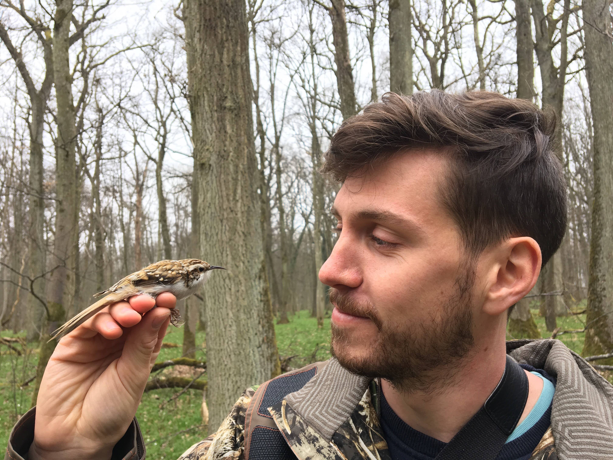
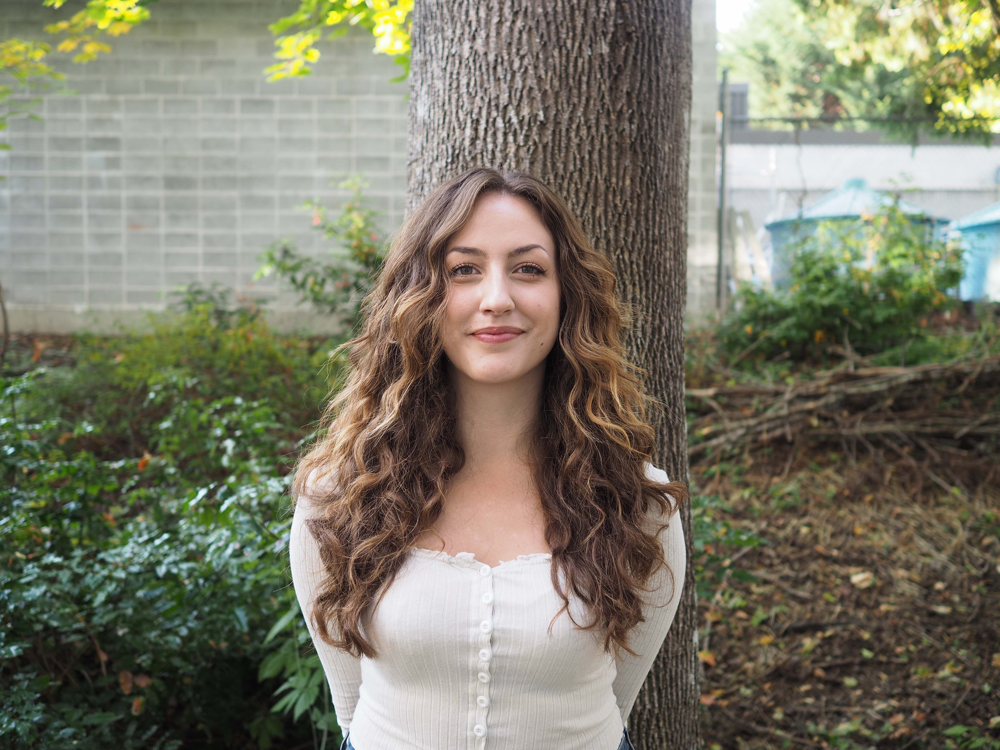
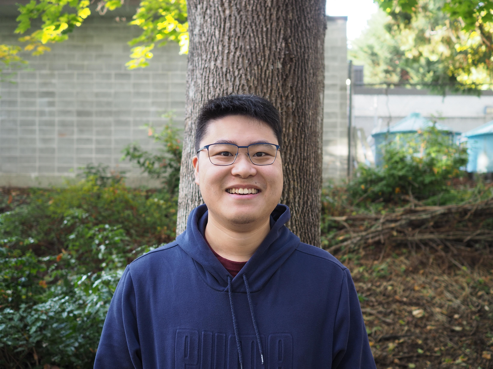
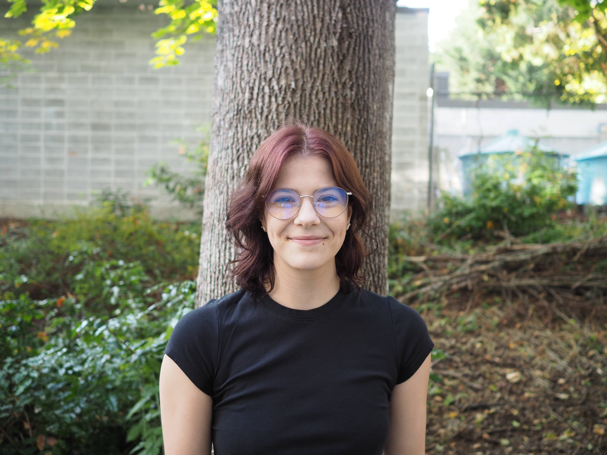
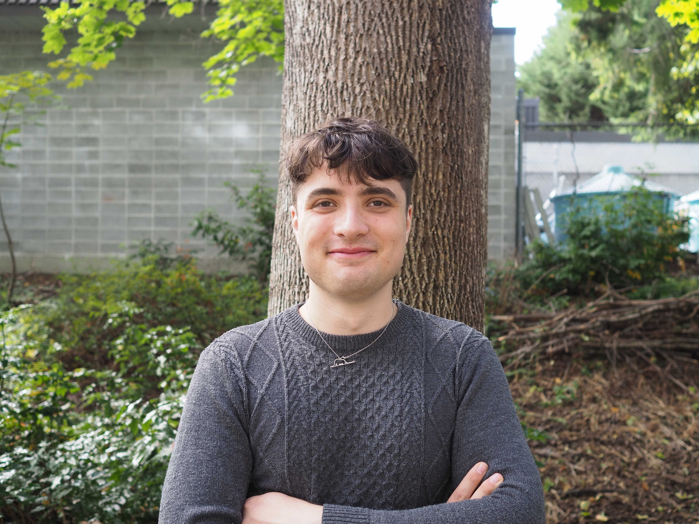

People

PI

Gregory L. Owens
Greg is an Assistant Professor of department of Biology at the University of Victoria. He completed his MSc in Biology at the University of Victoria studying opsin gene expression in the four-eyed fish Anableps anableps. He then did a PhD in Botany at the University of British Columbia using genomics to study hybridization in sunflowers. Greg recieved the Banting Postdoctoral Fellowship to work on structural variation in sunflowers at the University of California, BerkeleyPostdoctoral Researchers

Jordan Bemmels
Jordan is interested in population genomics, conservation genetics, and biogeography. In the Owens Lab, he is studying population genetic structure and patterns of environmental adaptation in two British Columbia kelp species, to establish baseline knowledge that will aid conservation and restoration of declining kelp forests. His past work has largely focused on understanding geographic range shifts and evolutionary adaptation in response to climatic and geological change, in systems such as kiwi birds, flycatchers, and temperate and tropical plants.Graduate Students

Nathan Sykes
Nathan is a master’s student interested in population genetics, local adaptation, and speciation. He is particularly fascinated by gene flow and phenotypic variation in metapopulations with broad ranges, the fitness effects of introgression, and the genomic rearrangements underlying reproductive isolation. His first foray into biological research examined the distribution, phylogeny, and commercial viability of feral hops in the Fraser Valley, BC. Currently, he is thrilled to be working on Pacific rockfish population genetics and sex chromosome evolution.
Justin Merondun
Justin is a visiting doctoral student from LMU Munich interested in the interplay of population genetic and epigenetic processes contributing to speciation. Using various avian systems across scales of integration, he is currently interested in microevolutionary processes underlying nascent species divergence in Eurasian crows, the role of female-limited polymorphisms in maintaining coevolutionary arms races in European cuckoos, and macroevolutionary processes contributing to sex chromosome evolution.Undergraduate Students

Koa Planedin
Koa is an honours student studying the origin of a novel sex chromosome in deacon rockfish.
Martin Liu
Martin is a former directed studies student in the lab and resident plant expert.
Cam Bass
Cam is an third year undergrad working on computational genomic problems in the lab.
Silas Porter Crenna
Silas is a third year undergrad working on identifying structural variation in rockfish.Former lab members
- Kaede Hirabayashi - MSc student (2021-2023) - Research associate at UBC
- Adam Gheis - Honours student (2022-2023)
- Alex Pinch - Undergrad research associate (2022-2023)
- Sara Wuitchick - Postdoctoral researcher (2022) - Assistant Professor at Mount Royal University
- Ethan Dhaliwal - Directed studies (2021) - Medical student at UBC
- Dixita Basumatary - Directed studies (2021)
- Koa Planedin - Co-op Research student (2021)